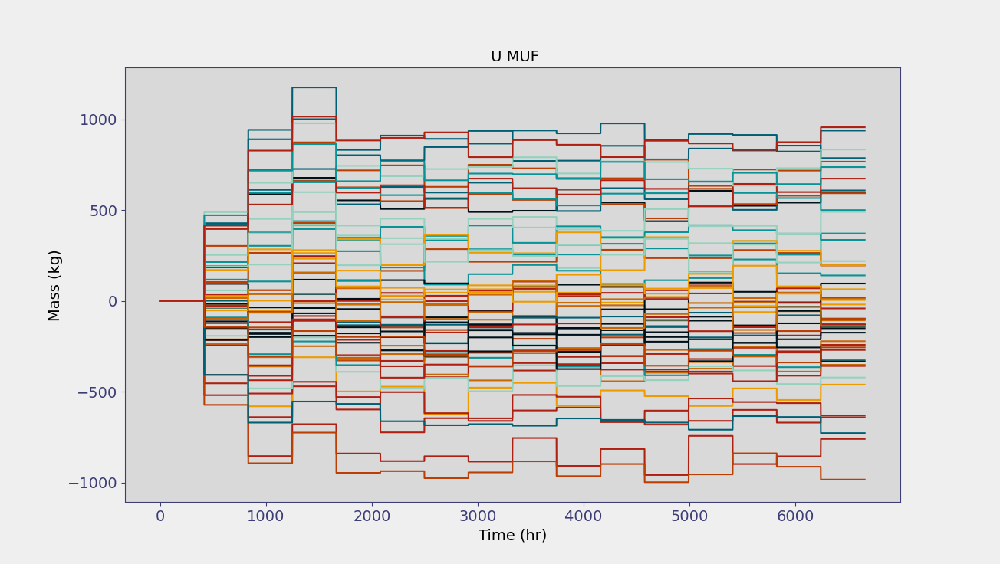
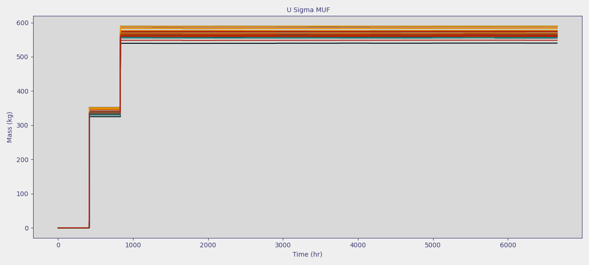

Exercise 2: Impacts of measurement error#
Objective#
Explore the impact of measurement error on safeguards metrics. Recall that measurement error negatively impacts the ability to detect anomalies such as material loss.
Caution
This exercise assumes that you are familiar with MAPIT and can perform tasks discussed in the previous exercise (i.e. launching MAPIT, loading the included scenarios, setting up MAPIT to perform analyses, etc).
Problem setup#
Start this exercise by launching MAPIT, selecting the Fuel Fab model under
Modeloption, and selecting theNormaldataset.This tutorial starts by assuming you are at the main MAPIT interface (similar to the image below)

Select the following statistical tests
MUF
Cumulative MUF
Sigma MUF
SITMUF
Page’s test on SITMUF
Next, configure the required parameters in the statistical box using the same parameters from exercise 1:
MBP: 416Iterations: 50If running on a lower performance device, try running with
Iterations: 20
Analysis Element/Index: UTemporal Offset: Empty
Set the measurement errors by pressing the Select Errors button.
Choose 3% for all random and systematic errors.
Leave the calibration period as the default
Nonevalue.
Run MAPIT by pressing the Run button.
Data exploration#
After running, several plot options should be available under the plot controls option (similar to image below).
Plot Data Type
Plot Data Location (to investigate the behavior at all key measurement points)
Contribution Type
Iterations to Plot

Note
MAPIT’s plotting options are dependent on the data type selected. Ground Truth and Observed Data are the only data types that have access to the Plot Data Locations. The Sigma MUF Contribution plots are the only plots that have access to the Contribution option, which will become selectable when the Sigma MUF Contribution data is selected. The Analysis boxes selected and the Observed Data have additional plotting options under the to plot toolbar. The user is able to plot 1 random iteration, the average of all iterations, and all iterations. In this exercise some of the potential plots available are shown.
Note
MAPIT can export any figures for later use. Simply click the floppy disc icon below the plotting window.
Start by observing the calculated MUF values
Plotting options dynamically change based on the data type selected and number of iterations considered
Since
Iterationswere set to<= 50(a relatively small number), start by plotting them all.The plot should generally look like the images below, but will vary due to the inherent randomness of the calculation.

Next, plot the U Sigma MUF (i.e. \(\sigma_\text{MUF}\)) and notice that it tends to remain around 600 kg.
The first balance period has a smaller Sigma MUF due to startup conditions

Try plotting the U SITMUF data.
Your plot should look similar to the one below
Notice that U SITMUF tends to decrease overtime and then reaches a steady state value
Also, SITMUF has (approximately) a mean of zero and standard deviation of one once the covariance matrix is well approximated

Note
The results seen when plotting SITMUF match the description from earlier lessons. That is, that SITMUF is the independent MUF sequence. However, notice that the SITMUF values start larger than their final, steady state values. Recall that the transformation from MUF to SITMUF uses an estimate of the covariance matrix (shown below).
Note
The covariance matrix grows as repeated material balance calculations are made and observed, which results in a better approximation of the true covariance matrix. In fact, the approximation will converge on the true value as the number of measurements approaches infinity. Consequently, the variance and mean of the transformed sequence, SITMUF, converge to 1 and 0 respectively as the covariance estimate improves.
Finally, try plotting the Page U SITMUF. This is Page’s trend test on SITMUF which is used to detect subtle trends in SITMUF that could indicate a material loss.
Page’s test will be discussed further in the next exercise.
Feel free to try entering numbers into the
Enter Thresholdbox and pressing Calculate MAPIT will return the number of runs that exceed the user specified threshold, which is useful for analyzing performance of a safeguards system.MAPIT returns the % of all runs over the threshold, even if not all are plotted. For example, even if only one of the 50 runs are plotted, it will still return the same value.
Understanding error contribution#
After examining the different quantities calculated by MAPIT, open the error contribution table to better understand the contributions of different KMPs to the material balance uncertainty. Do this by selecting the Tabular Data View > Error Contribution from the top menu bar of MAPIT.
The error contribution table should display all the locations in addition to their random and systematic contributions to Sigma MUF. Your table should look similar to the image below.
The
inventorycolumn refers to the actual mass at the selected material balance periodFor flows (e.g. inputs and outputs) this is the time integrated flow over the material balance period
For inventories this is the instantneous inventory value
The random and systematic contribution are the contributions to Sigma MUF

Along with the error contribution table, MAPIT has a set of plots that visualize the error contribution of each key measurement point. The
Contribution(both absolute and relative) plot the impact individual measurement points have on the Sigma MUF.
Note that contributions are identical as random and systematic are set to the same value of 3%.#
Try looking at different material balance periods.
Both the plots and the table shows that
Cylinder (input)andFuel Pins (output)have the largest inventory terms and consequently the largest contribution
Change the measurement uncertainty of the
Cylinder (input)andFuel Pins (output)error terms to 1%.MAPIT does not need to be restarted to perform another calculation on a new dataset, however, note that current results will be lost
Press the Select Errors button and edit the corresponding boxes to reduce the error for the two components.
Press Run to again calculate the statistical quantities.
Check the newly calculated values by plotting key quantities such as Sigma MUF.
Note that Sigma MUF has decreased dramatically from approximately 600 to 210.
Examine the
Error Contributionand note that the contribution from theCylinder (input)andFuel Pins (output)has similarly fallen in magnitude.The next exercise will consider the impact of measurement error for safeguards more concretely by considering a hypothetical material loss.
The total contribution plot now shows decreased measurement uncertainty on the
Cylinder (input)andFuel Pins (output), other key measurement points now have comparable uncertainty.
{kind=link}
Note
The material balance period can similarly impact key quantities like Sigma MUF. Longer balances lead to higher Sigma MUFs whereas shorter balances lead to smaller Sigma MUFs. However, there is a limitation to the gains of shorter material balances. While not explored in this exercise, further details can be found in this work by Avenhaus and Jaech.
Summary#
🎉 You have finished the second MAPIT exercise. 🎉
In this exercise, you learned about how to change simulated measurement errors in MAPIT and their impact on calculated statistical quantities. Further, the capability of MAPIT to show individual error components was also introduced.
Higher measurement error leads to larger Sigma MUF values
Uncertainty contributions rely on both measurement error and inventory size
Continue to exercise 3.